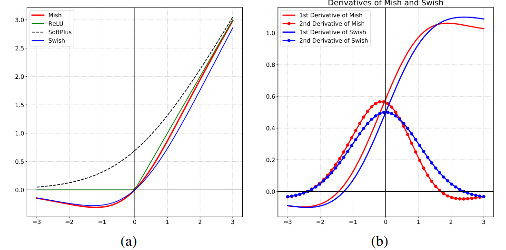
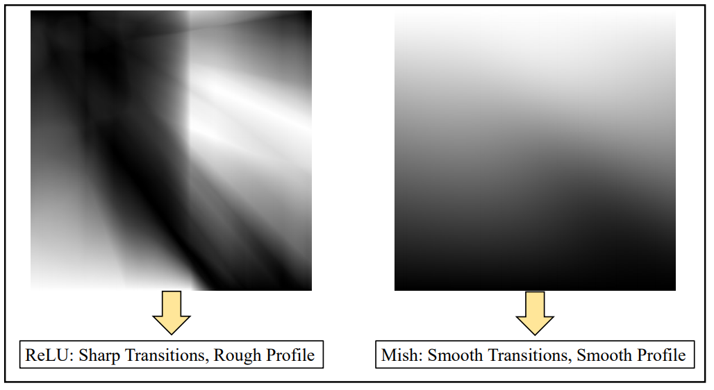
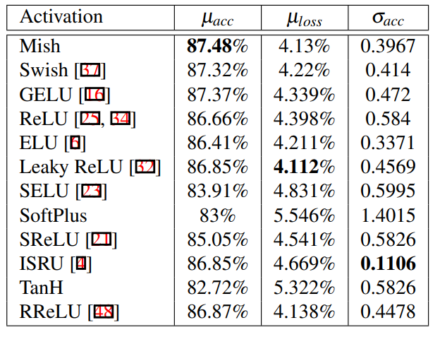
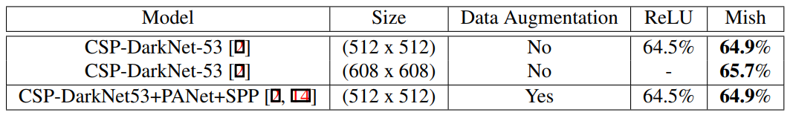
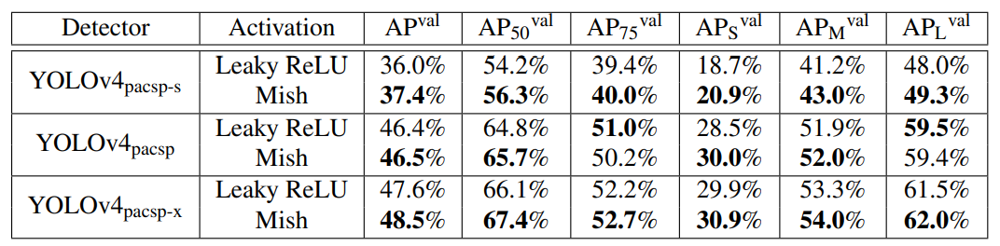
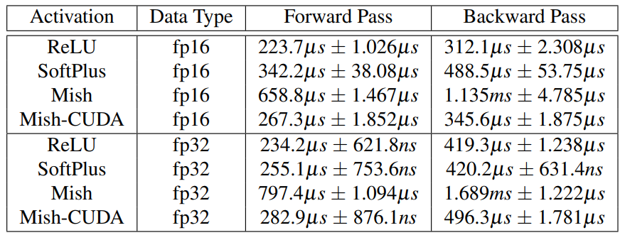

どんなもの？
活性化関数ReLU/Swishの後継であるMishを提案。下に有界、負の値も取る、無限微分可能、lossも滑らかになり最適化しやすいという特徴があります。
先行研究と比べてどこがすごい？
多くのタスク、ネットワークにおいてReLU/Swishを上回っています。また、使用している活性化関数を Mish に置換するだけなので導入も簡単です。
技術や手法のキモはどこにある？
Mish関数の定義
Mish関数は以下の式で定義されます。 $$ f(x) = x \tanh(softplus(x)) = x \tanh(\ln(1+e^x)) $$
$$ f'(x)=\frac{e^x[4(x+1) + 4e^{2x}+e^{3x}+e^x(4x+6)]}{(2e^x+e^{2x}+2)^2} $$

Mish関数の特徴
Mish関数には、1）負の値を保持、2）下に有界、3）無限回微分まで連続、4）output landscape が滑らか という特徴があります。1）~3）の特徴は Swish が有していましたが、4）が Mish 関数の強みですね。
負の値を保持
Mish関数は $[≈-0.31, ∞)$ で定義されます。負の情報が若干保存されているため、dyling ReLU 現象が発生しにくい ようです。「関数設計的に dying ReLU の必要条件を排除した」とのことです。
dying ReLU 現象とは、勾配がなくなるニューロンが発生する現象であり、ReLU の負領域では勾配がゼロになることが原因です。学習時に大きく負側に重みが更新された場合、ReLUで活性化しなくなります。この dying ReLU 現象が Mish 関数では起きにくいようです。
また、負の値を保持することで、強い正則化の効果もあるようです。
下に有界
上限がないため、sigmoid や tanh のような飽和がありません、これにより勾配がほぼゼロになることがなく、学習が促進されます。また、強い正則化効果をもたらします（？）。
無限回微分が可能
Mish関数は無限回微分可能であり、特異点（local minimaのこと？）の回避に貢献します。
output landscapeが滑らか
Mish 関数により、モデルの output landscape, 引いては loss landscape も滑らかになり、最適化と一般化が容易になります。
 5層 NN の output landscape です。ReLU（左）とMish（右）の output landscape の滑らかさの比較
どうやって有効だと検証した？
Ablation Study on CIFAR-10 and MNIST
下図 (a) は 層の深さに対する安定性 を主張しています。MNIST に対して、赤実線の Swish は層が深くなっても accuracy が低下していませんね。一方、青実線の Swish や 黒実線の ReLU は急激に accuracy が低下していきます。
下図 (b), (c)では Swish/ReLU よりロバストであること を主張しています。図 (b) はデータセットに加えたガウシアンノイズの標準偏差に対する test loss を表しています。もちろん loss は増加しますが、Mish は Swish/ReLU と比較して loss の増加が抑えられています。図 (c) から様々なノイズ付与方法に対しても、 Mish の accuracy の低下が抑えられていることがわかります。

Statistical Analysis
CIFAR-10 に対し、Squeeze Net を23回学習させたときの平均 accuracy, 平均 loss, accuracy の標準偏差の一覧です。Mish が最も平均 accuracy が高く（一応）、標準偏差も小さく学習が安定しています。

ImageNet-1k
ImageNet と様々なバックボーンで学習させました。Top-5 が得意な ReLU, Top-1 が得意な Swish のいいとこどりをしたような結果ですね。

MS-COCO Object Detection
なんともいえないビミョーな結果です。


議論はあるか？
速度に難あり
当たり前ですが、機構が単純な ReLU と比べると約 3 倍の forward/backward time がかかっています。どのタスクでも比較的良い性能を誇ってきた Mish の欠点ともいえます。
 GPUはRTX2070を使用。ReLU-CUDA の結果も載せてほしいです。
次に読むべき論文はあるか？
- P. Ramachandran et al., “Searching for Activation Functions, " 2017
- arxiv
- 目の敵にされていた Swish の元論文。